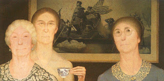

Bava Batra 118 - Who Got a Portion in the Land of Israel

The daughters of Tzelophchad and the descendants of Joseph petitioned for the share in the Land of Israel. From this we learn that there was not one other person who entered the Land who did not take a portion. And if you think that only successful petitions were recorded, like the one of the daughters of Tzelophchad, then the petition of the descendants of Joseph will prove you wrong, for they did not get it granted .
Joshua and Calev took the portions of the spies in the Land. We learn it from "... they lived from among the spies ..." We already know that they did not die from "... and not a man was left of them exept for Calev and Joshua ...", so what does the extra "live" tell us? That they lived in the portions of the spies.
Art: Grant Wood - Daughters of the Revolution